Terraform foundation
Modular resources cover VPC, routing, security groups, IAM, EC2, RDS, ALB, ECR, secrets and SNS/CloudWatch.
Open Terraform ↗An end-to-end AWS platform built with Terraform, containerized FastAPI delivery, GitHub Actions, observability and DevSecOps controls — with the implementation documented from first failure to final proof.
The goal was not just to make an application run. The assignment called for a complete DevOps lifecycle: provision AWS infrastructure as code, containerize and deploy a FastAPI service, automate delivery, add monitoring and alerts, and demonstrate security practices.
Terraform defines the network, security groups, IAM, EC2, RDS, ALB, ECR, Secrets Manager and alerting resources so the environment can be recreated consistently.
Internet traffic reaches a single Application Load Balancer. Application and monitoring EC2 instances stay private, and PostgreSQL is isolated in private database subnets.
The platform was built in layers: Terraform provisions the foundation, Docker packages the service, ECR stores the image, and SSM handles deployment without exposing SSH.
Modular resources cover VPC, routing, security groups, IAM, EC2, RDS, ALB, ECR, secrets and SNS/CloudWatch.
Open Terraform ↗The FastAPI application is packaged with a Dockerfile and deployed from ECR to private EC2 instances.
Open application ↗Session Manager replaces SSH keys and port 22. The instances remain private while still being operable.
Bootstrap scripts ↗RDS PostgreSQL runs privately with encrypted storage and credentials generated/stored in Secrets Manager.
View RDS code ↗The deployed service exposes Swagger UI and health endpoints through the public load balancer while the container itself stays on private EC2.
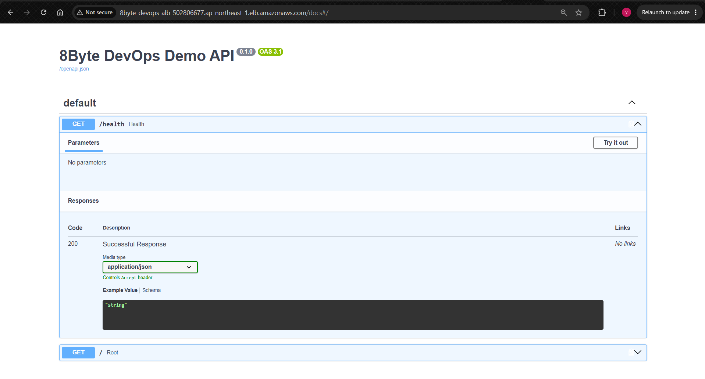
Three workflows separate validation, automated staging delivery and intentionally protected production deployment.
Unit + integration tests, dependency scan and Trivy image scan.
pr-checks.ymlBuild with Git SHA labels, push to ECR and scan the pushed image.
staging-deploy.ymlPull the image on private EC2, restart the container and check the ALB.
SSM SendCommandManual confirmation + environment approval + CRITICAL-only Trivy gate.
production-deploy.ymlTrivy detected CRITICAL vulnerabilities in the Debian base image. The workflow stopped before deployment, demonstrating that the security control was enforcing the intended policy.
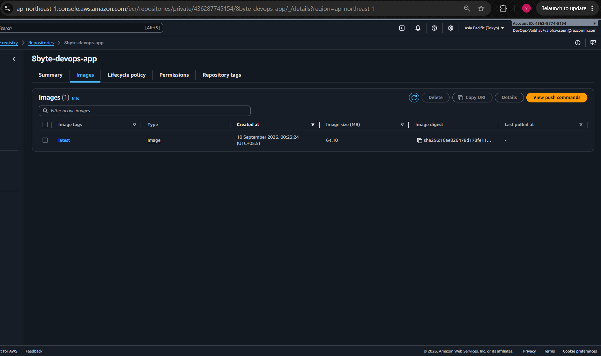
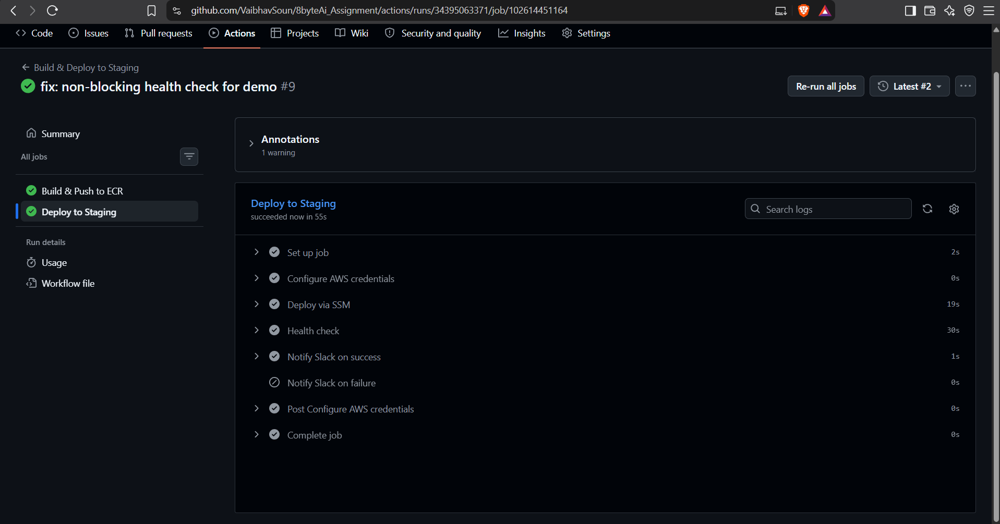
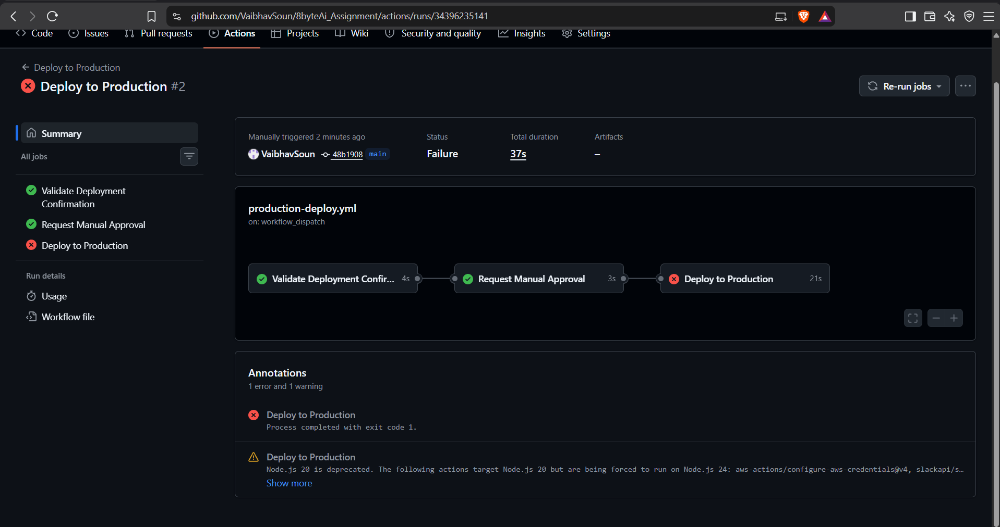
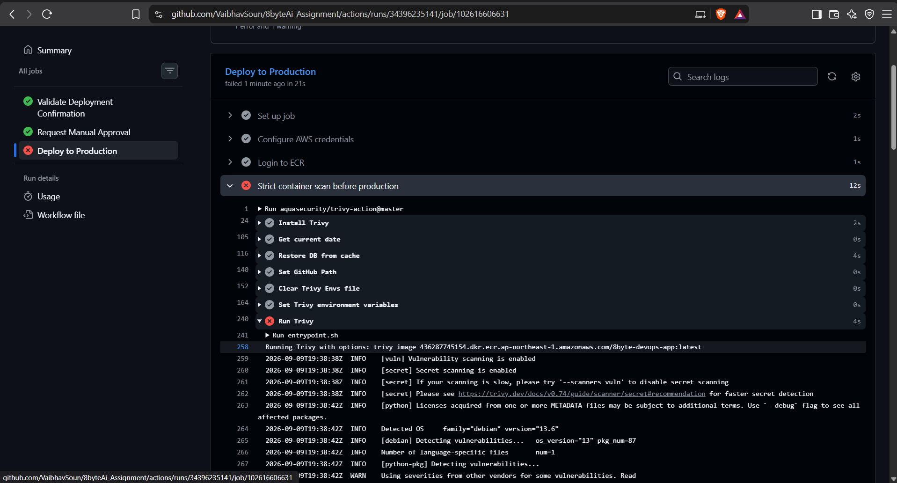
Prometheus and Grafana cover EC2 infrastructure metrics, while Grafana uses CloudWatch as the source for RDS metrics. Seven alarms turn important thresholds into notifications.
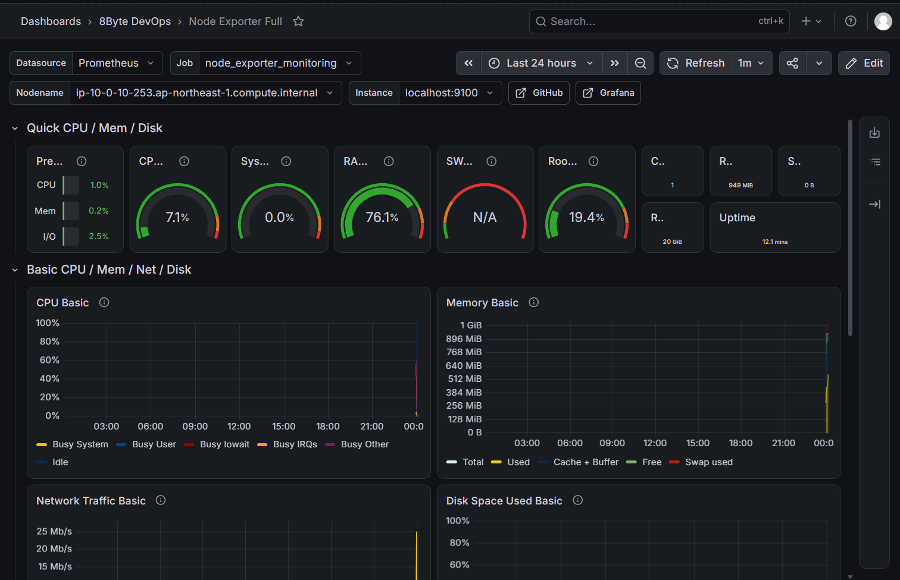
Database connections, CPU, memory and storage are visible through Grafana using CloudWatch.
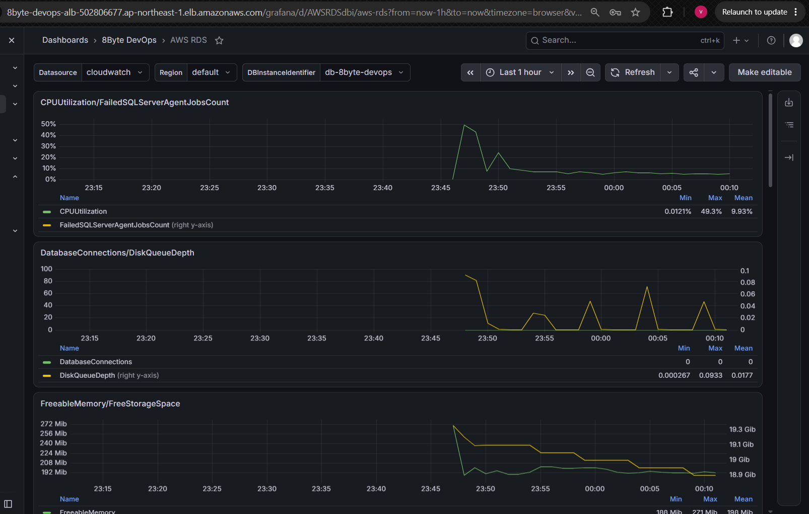
EC2 High CPU > 80%
EC2 High Memory > 85%
EC2 High Disk > 85%
RDS High CPU > 80%
RDS Low Memory < 128 MB
RDS High Connections > 80
RDS High WriteIOPS > 1000
The implementation applies security controls at network, identity, secret, host, storage and container layers — not as an afterthought.
AWS SSM Session Manager is the operating path. Port 22 is not exposed.
Separate service roles scope access for SSM, ECR and Secrets Manager.
EC2 and RDS have no public IPs; the ALB is the controlled public edge.
Database and Grafana credentials are generated and stored outside application code.
S3 state uses encryption/versioning; RDS and EBS storage are encrypted.
Staging reports vulnerabilities; production blocks when CRITICAL findings exist.
ALB access logs go to S3 and VPC Flow Logs go to CloudWatch.
Free-tier-sized compute, lifecycle policies and a single NAT keep the demo practical.
Fourteen issues surfaced across Terraform, AWS, Docker, Git and CI/CD. Each one forced a design decision or a production-practice lesson.
A globally unique bucket name was already taken. The state bucket was made unique with an account-specific suffix.
Mutual SG references created a dependency cycle. Ingress stayed tightly scoped while egress was simplified to break the cycle.
The DB endpoint depended on RDS while RDS depended on the secret. Resource creation order was restructured.
Terraform attempted to interpolate shell variables. Userdata was switched to file() to remove the collision.
PostgreSQL 15.4 was unavailable in Tokyo. Available engine versions were queried and 15.19 selected.
The missing AWS session token caused invalid security-token errors. The workflow was updated; OIDC is the production evolution.
Generated .terraform artifacts were accidentally committed. They were removed from tracking/history and ignored correctly.
CRITICAL CVEs in the base image stopped production deployment by design. The correct production fix is to update and re-scan the base image.
Selected evidence from the actual implementation. Click any image to expand it.
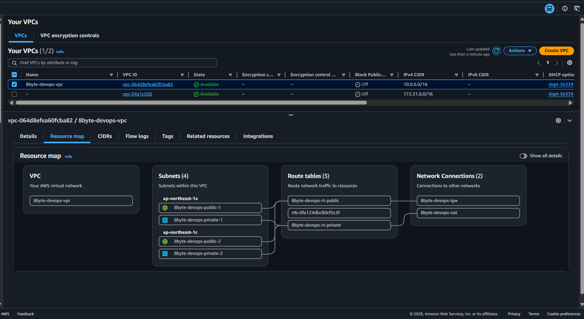
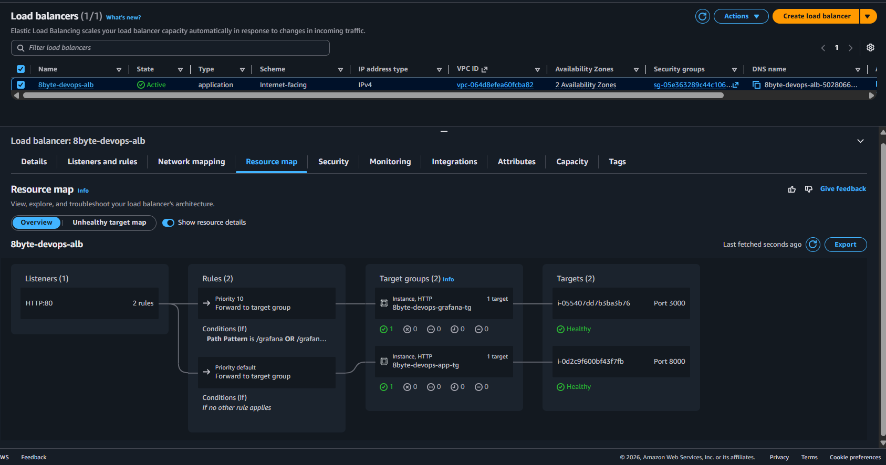
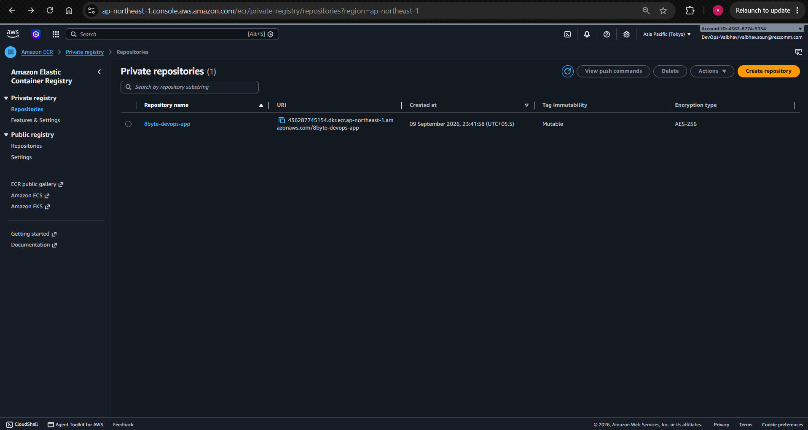
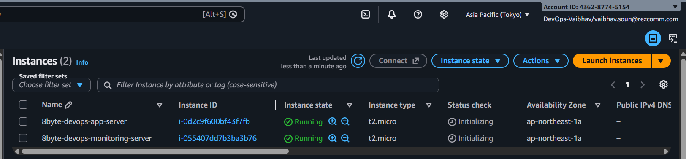
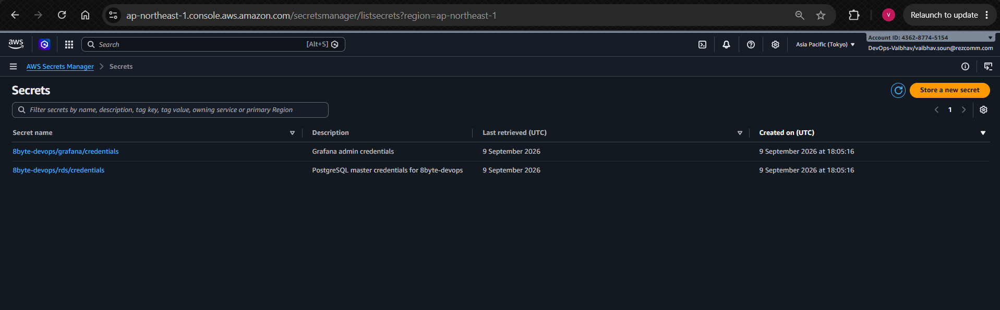
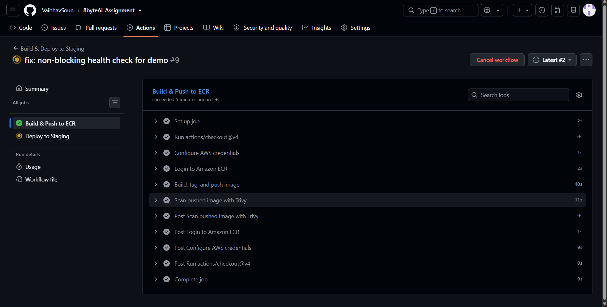
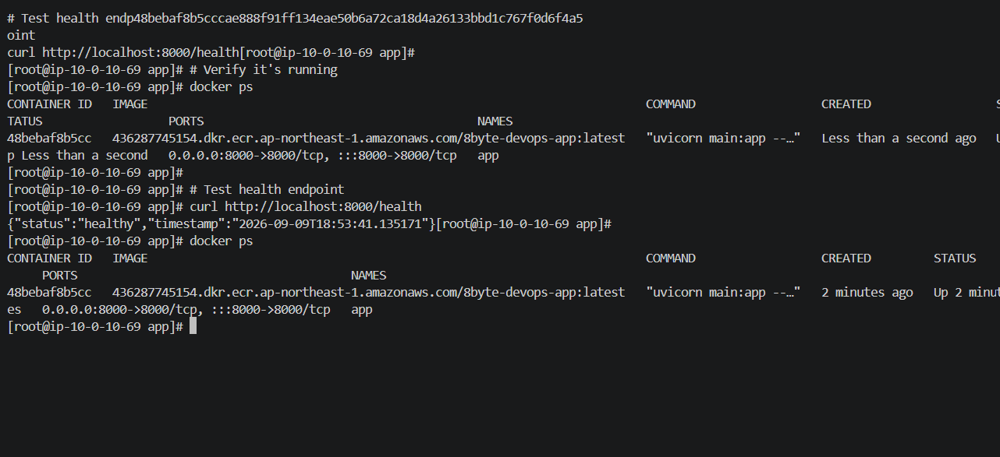
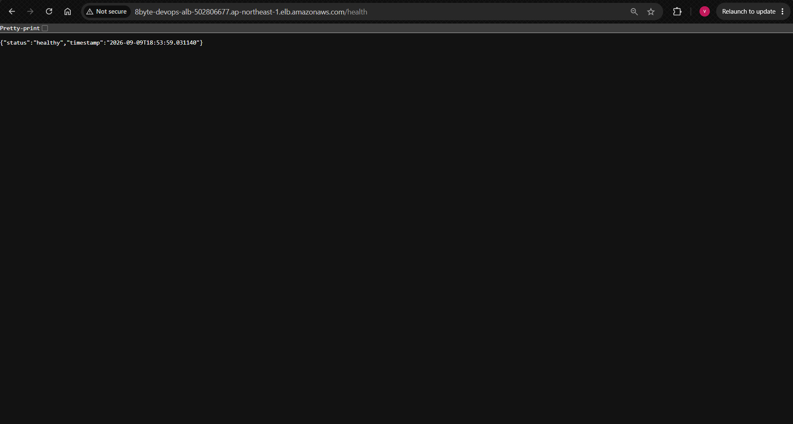
Each tool has a specific job in the lifecycle — from provisioning to deployment, security and operations.
Terraform provisions it. GitHub Actions moves it. Trivy protects it. Grafana watches it. The repository documents it.
{kind=link}